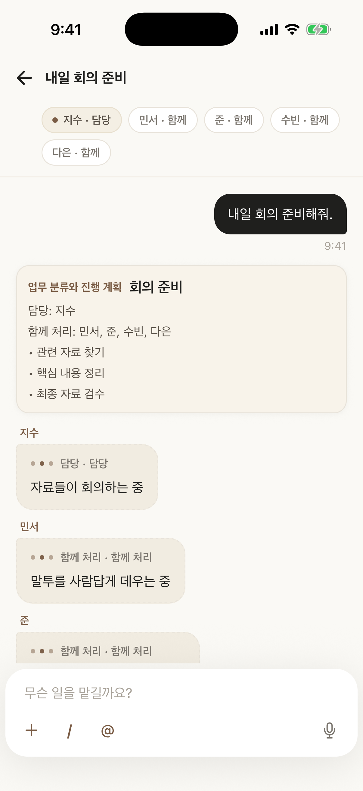
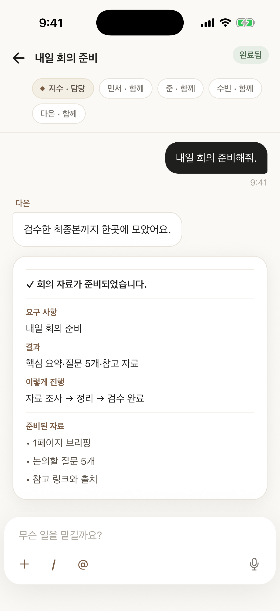
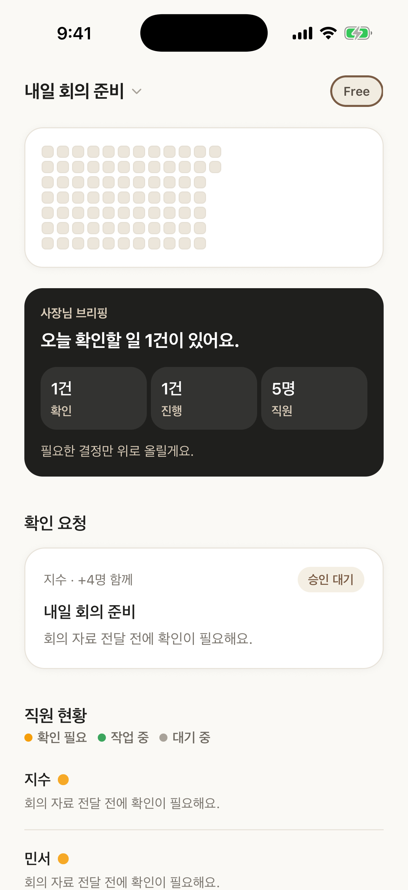
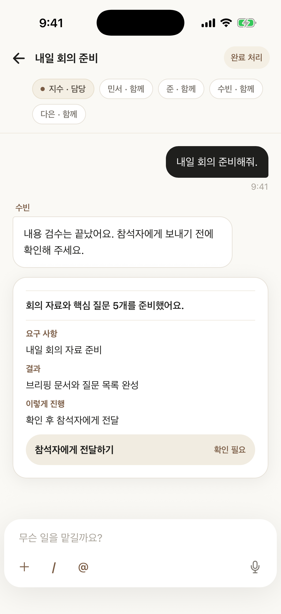

온라인 판매 · 초안
작게 시작하는 판매 준비
- 아이템과 고객 가설
- 후보 품목 3개와 각각의 예상 구매자, 이미 파는 곳과 다른 점 한 줄씩.
- 확인할 질문
- 한 달에 쓸 수 있는 시간과 예산은? 재고 없이 시작할 수 있는 방식은?
- 이번 주 첫 행동
- 후보 품목 판매처 3곳 직접 둘러보고 메모하기.
생각은 있는데, 시작이 막막할 때
온라인 판매를 준비할 때,
유튜브·인스타 콘텐츠를 시작할 때,
중요한 정보를 조사하고 계획을 세워야 할 때.
지금 상황을 말하면,
확인할 것과 첫 할 일부터 함께 정리합니다.

복잡한 준비나 따로 관리할 환경 없이,
모바일에서 필요한 일부터 시작할 수 있어요.
준비를 관리하는 대신, 오늘 필요한 일을 시작하세요.
처음에는 바로 업무를 맡길 수 있어요.
이미 쓰는 AI가 있다면,
필요할 때 지원되는 AI 연결을 사용할 수 있어요.
어떤 AI를 먼저 고를지보다,
지금 어떤 일을 맡길지가 더 중요하니까요.
아직 구체적이지 않아도 괜찮아요.
가장 가까운 곳에서 시작해보세요.
이렇게 요청하게 돼요
“아이템과 고객부터 정리하고, 이번 주에 할 일을 잡아줘.”
수익을 보장하는 계획이 아니라, 먼저 확인할 것과 첫 실행을 정리하는 것부터 시작해요.
온라인 판매 · 초안

정답을 대신 정해주기보다,
다음 판단을 위해 필요한 내용을 함께 정리합니다.
01 말로 시작
지금 상황과 목표를 편하게 이야기합니다.
02 방향과 기준 정리
무엇을 먼저 확인할지, 어떤 기준으로 볼지 함께 좁힙니다.
03 조사·비교·초안 맡기기
자료를 붙이거나 파일을 보내고 필요한 정리를 요청합니다.
04 진행과 결과 확인
작업 중인 일과 지금 확인이 필요한 일을 앱에서 봅니다.

05 중요한 일은 직접 결정
확인이 필요한 일은 결과를 먼저 보고 결정합니다.

매번 처음부터 설명하지 않아도,
이전에 정한 기준과 결과를 이어 보며 다음 일을 맡길 수 있어요.
다음 업무에 적용할 조건은 직접 선택해 저장합니다.
지난주
회의 내용 정리하고 담당자별 할 일로 만들어줘.
오늘
그중 이번 주 안에 끝내야 하는 일만 다시 정리해줘.
이번 주 우선 작업과 확인할 항목을 정리했어요.
결과는 읽기 쉽게 정리하고,
확인이 필요한 일은 먼저 보고 결정할 수 있어요.
투자 판단이나 매매를 대신하지 않습니다.
정보를 정리하고, 더 나은 판단을 위한 준비를 돕습니다.
시작하기 전에
앱은 스토어 출시를 준비 중이에요. 멤버십 구성, 도움말, 개인정보 처리, 이용약관과 계정·데이터 삭제 절차는 지금 확인할 수 있어요.
목표가 아직 흐릿해도 괜찮아요.
지금 상황부터 이야기하면,
다음에 할 일을 함께 정리합니다.